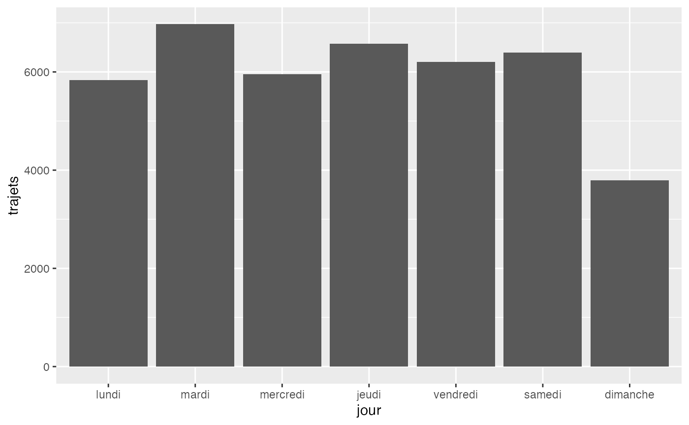

utilisation-filtrage-graphique.RmdCette vignette montre comment filtrer un jeu de données df_velo sur une ou plusieurs boucles de comptage, puis produire un graphique simple.
On utilise la fonction filtrer_trajet() pour conserver uniquement certaines boucles.
df_filtre <- filtrer_trajet(trajet = df_velo, boucle = c("880", "881"))
head(df_filtre)
#> # A tibble: 6 × 32
#> `Numéro de boucle` Jour `00` `01` `02` `03` `04` `05` `06` `07`
#> <dbl> <date> <dbl> <dbl> <dbl> <dbl> <dbl> <dbl> <dbl> <dbl>
#> 1 880 2025-11-02 30 27 14 11 5 3 4 4
#> 2 881 2025-11-02 14 23 3 1 3 1 9 9
#> 3 881 2025-11-01 28 19 17 6 3 5 5 14
#> 4 880 2025-11-01 45 29 19 13 11 5 10 4
#> 5 880 2025-10-31 30 13 8 12 7 7 22 66
#> 6 881 2025-10-31 18 7 3 3 2 5 21 57
#> # ℹ 22 more variables: `08` <dbl>, `09` <dbl>, `10` <dbl>, `11` <dbl>,
#> # `12` <dbl>, `13` <dbl>, `14` <dbl>, `15` <dbl>, `16` <dbl>, `17` <dbl>,
#> # `18` <dbl>, `19` <dbl>, `20` <dbl>, `21` <dbl>, `22` <dbl>, `23` <dbl>,
#> # Total <dbl>, `Probabilité de présence d'anomalies` <chr>,
#> # `Jour de la semaine` <dbl>, `Boucle de comptage` <chr>,
#> # `Date formatée` <date>, Vacances <chr>On peut ensuite calculer la distribution des trajets par jour de la semaine.
df_dist <- calcul_distribution_semaine(df_filtre)
df_dist
#> # A tibble: 7 × 2
#> `Jour de la semaine` trajets
#> <dbl> <dbl>
#> 1 2 6970
#> 2 4 6578
#> 3 6 6396
#> 4 5 6202
#> 5 3 5955
#> 6 1 5830
#> 7 7 3790Enfin, on peut utiliser plot_distribution_semaine() pour représenter la distribution hebdomadaire.
plot_distribution_semaine(df_filtre)